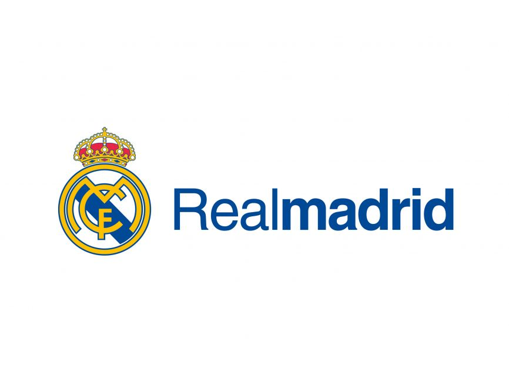

El Real Madrid Club de Fútbol, más conocido simplemente como Real Madrid, es una entidad polideportiva con sede en Madrid, España. Fue oficialmente registrada como club de fútbol por sus socios el 6 de marzo de 1902 con el objeto de la práctica y desarrollo de este deporte —si bien sus orígenes datan del año 1900,7 y su denominación de (Sociedad) Madrid Foot-ball Club de octubre de 1901—, siendo el quinto club fundado en la capital.n. 3 Tuvo a Julián Palacios y los hermanos Juan Padrós y Carlos Padrós como principales valedores de su creación.